CSS Box Model Overview
Sections:
#1 - CSS Box Model
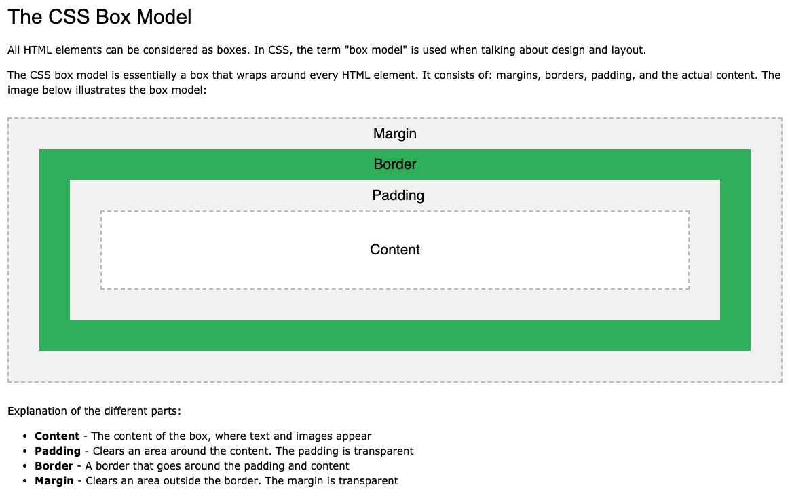
#2 - Box Model - Border Examples
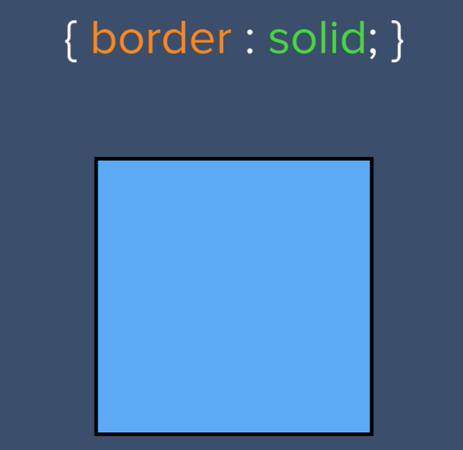
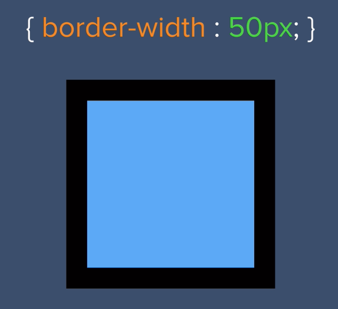
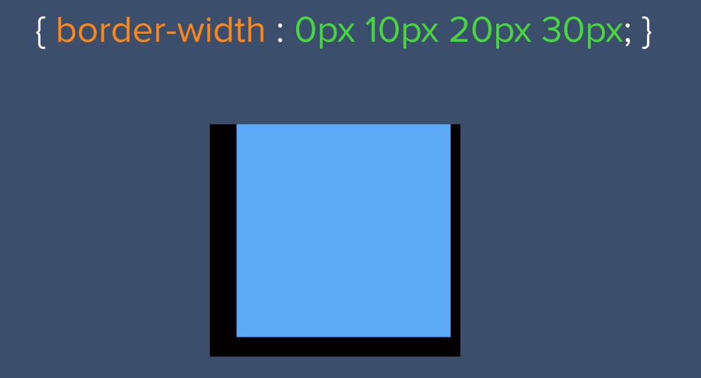
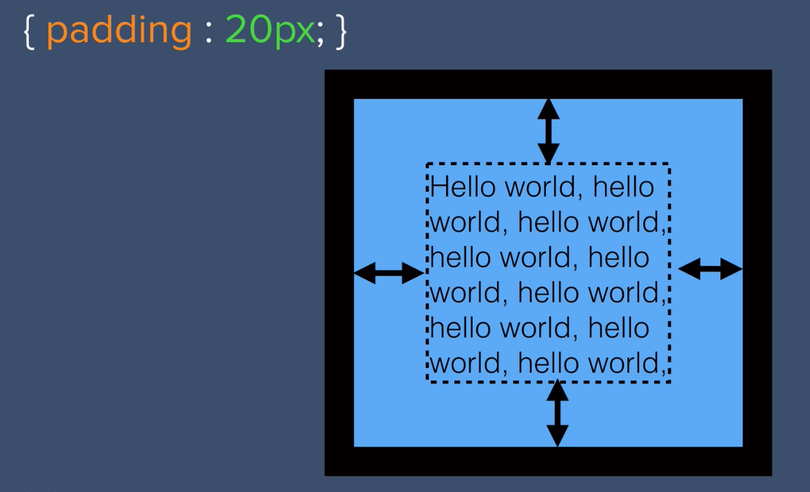
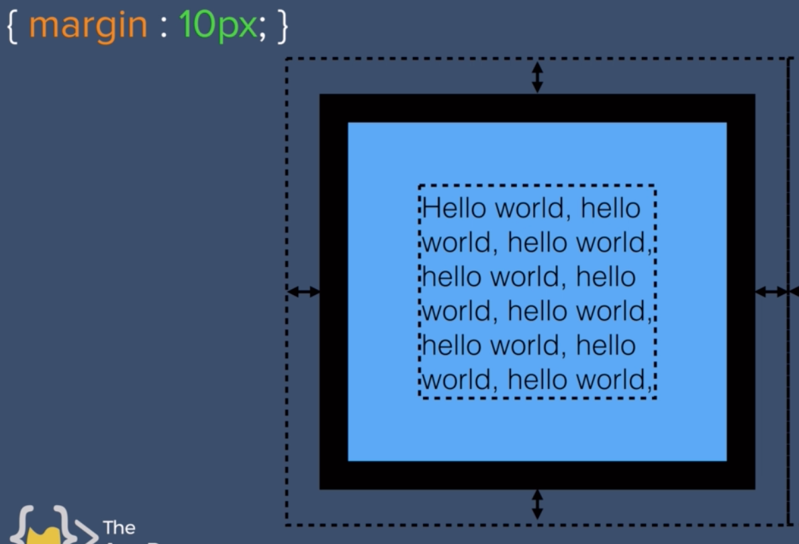
#3 - Box Model Challenge
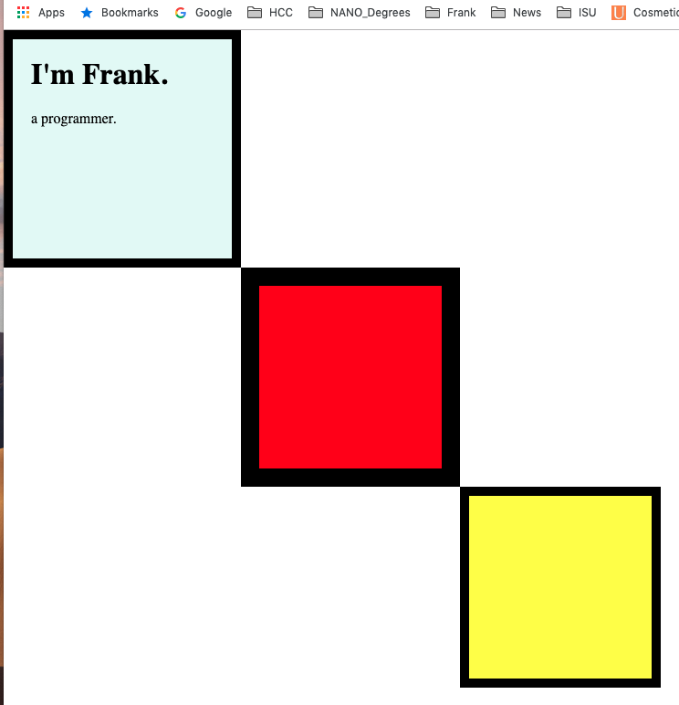
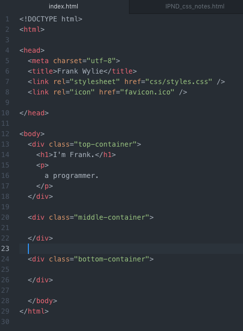
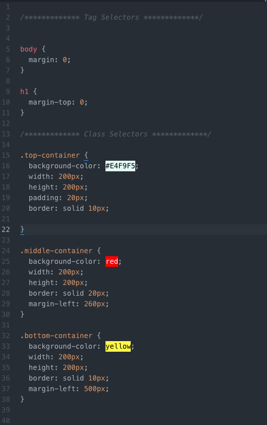
#4 - CSS Display Property
Reference:
W3 Schools Display Property
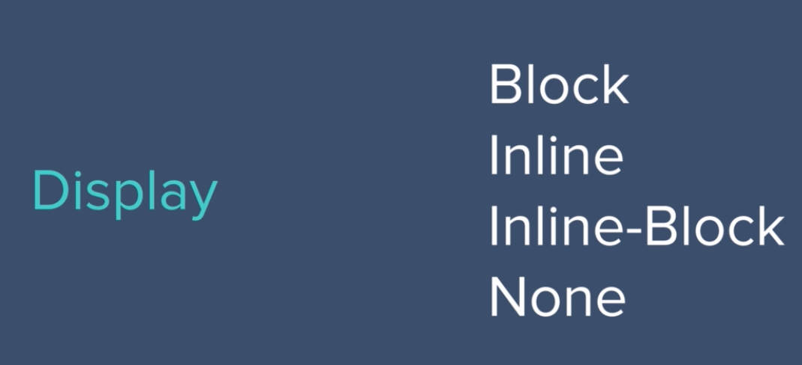
#5 - CSS Position Property
Reference:
W3 Schools Position property
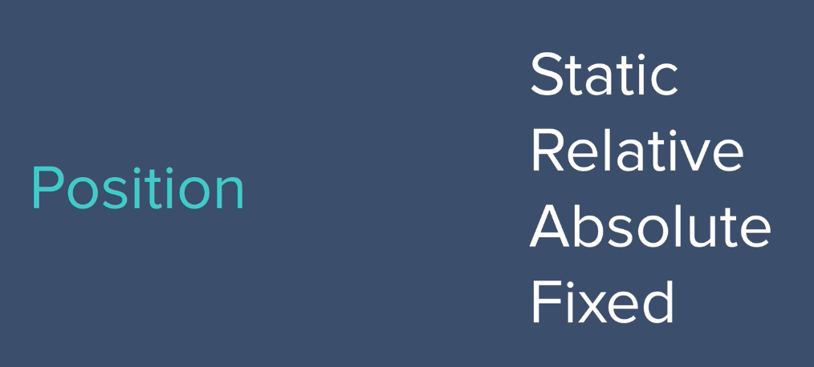
Note: Static is the default position, and fixed will likely be used to navigation.
Go To Top